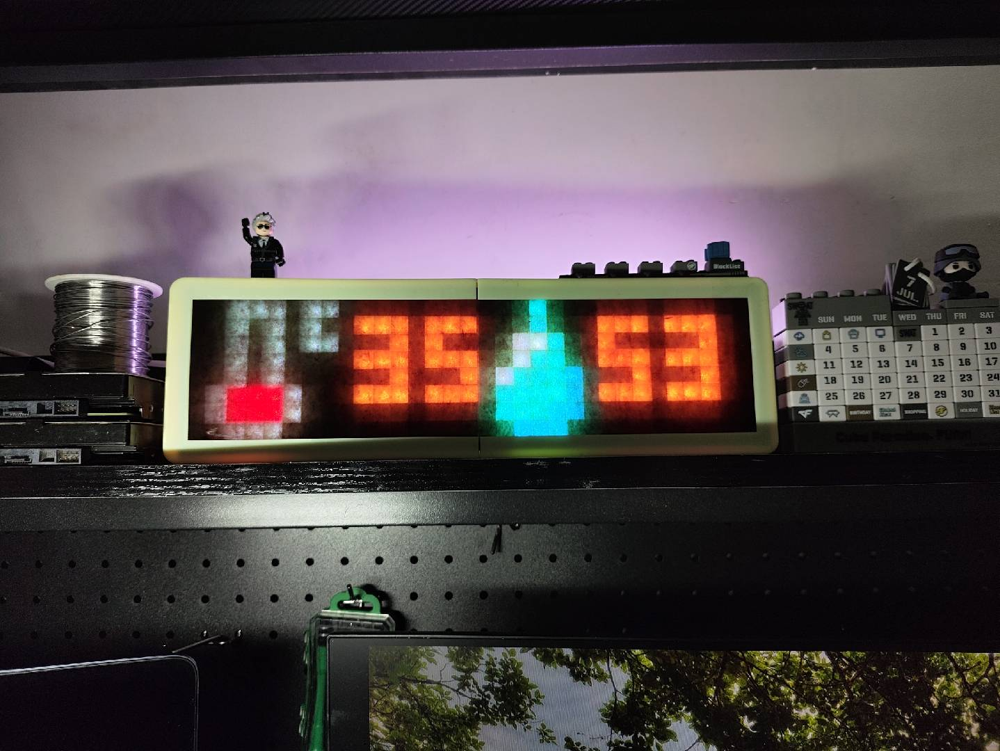
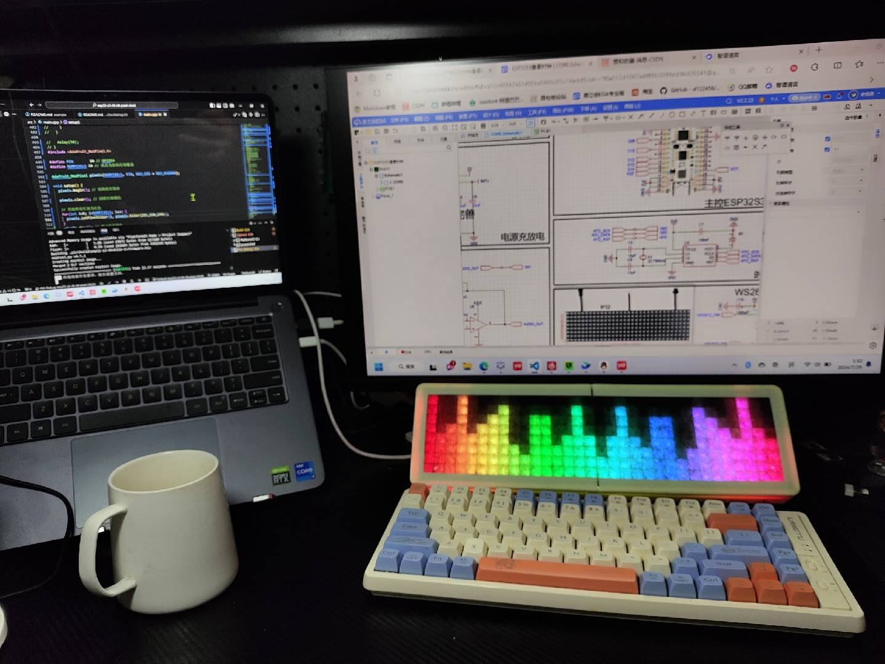
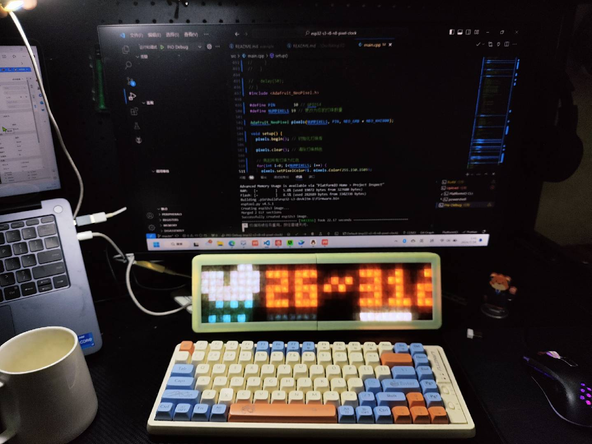
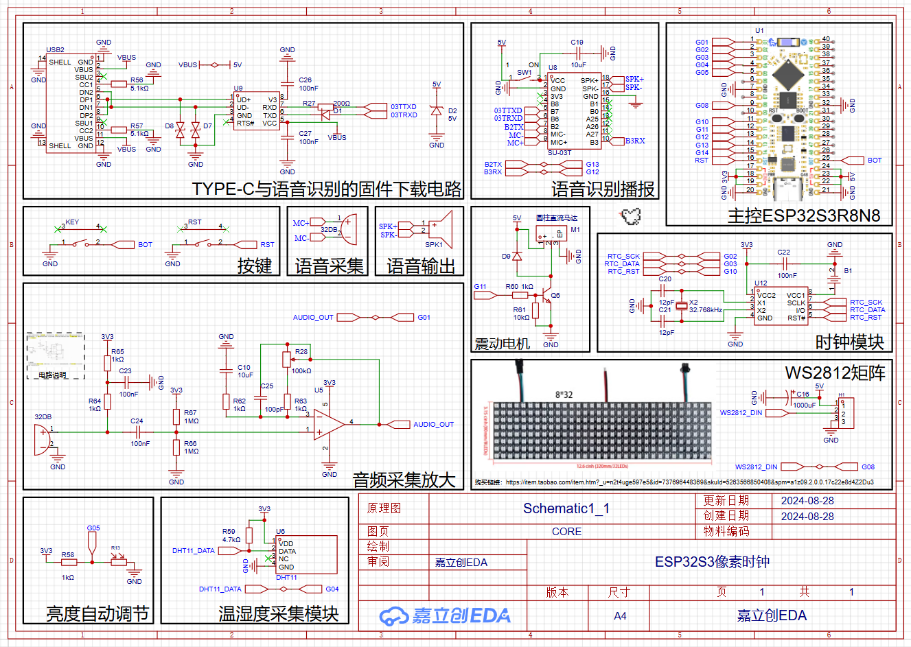

ESP32S3像素时钟
2024-12-05
Update history
| Date | Version | Author | Update content |
|---|---|---|---|
| 2024-12-05 | 1.0.1 | 老怪鸽 | 更新了基本文档 |
实物展示




介绍
基于立创·ESP32S3R8N8开发板制作的像素时钟。
软件架构
VSCode下的platformIO + arduino环境。
器件清单
- 1个 ESP32S3R8N8开发板
- 1个 DHT11温湿度传感器
- 1个 DS1302时钟模块
- 1个 8*32大小WS2812彩灯矩阵
- 1个 MAX4466 运算放大器/音频采集模块
- 1个 按钮
- 1个 SU-03T语音识别模块+配套的喇叭和麦克风（咪头）
- 1个 振动小电机
- 1个 光敏电阻+1K电阻
硬件连接
| 模块名称 | 模块引脚 | ESP32S3R8N8管脚 |
| DS1307 | SDA | 3 |
| SCL | 2 | |
| DHT11 | OUT | 4 |
| WS2812 | DIN | 8 |
| MAX4466 | OUT | 1 |
| 按钮 | KEY | 0 |
| SU-03T语音识别模块 | B2 | 13 |
| B3 | 12 | |
| 振动电机（需要三极管驱动） | MOTOR | 11 |
| 光敏电阻（需要1k电阻分压） | light | 5 |
| 共用部分 | 3V3(MAX4466, DHT11, 光敏电阻, DS1302) | 3V3 |
| 5V (WS2812, SU-03T, 振动电机) | 5V | |
| GND(全部) | GND |
原理图
V1.0.1版-原理图

待完善问题
- 如果天气获取失败，应该显示获取失败。
- 板子发热，大概是一直开启WIFI的问题。
- WIFI配网没有好看的HTML界面，进入配网时像素时钟没有UI显示。
- 亮度自动调节功能与天气界面的今明日切换的渐灭渐亮冲突了
部分代码参考
https://wokwi.com/projects/383363216212925441
https://gitee.com/adamhxx/arduino-open-source/tree/master/ESP32C3-CLOCK
https://github.com/sf122458/ESP32C3-PixelClock
https://github.com/pfalcon/uzlib
更新时间
一次更新时间：2024-4-24
二次更新时间：2024-7-28
三次更新时间：2024-8-7
新增WIFI配网但是没有添加动画有BUG，配网的HTML界面没有完善
四次更新时间：2024-8-8
新增亮度自动调节功能，但是发现与天气界面的今明日切换的渐灭渐亮冲突了，有BUG
五次更新时间：2024-8-16
新增振动电机功能，初始化完振动一次，按下按键就振动一次。解决配网时会自动连接上一个wifi导致无法配网问题，删除自动连接wifi部分。发现无法进行第二次配网的BUG
六次更新时间：2024-8-24
新增语音识别功能，语音命令表见main.cpp文件的注释
七次更新时间：2024-8-31
新增语音识别例程和教程文档